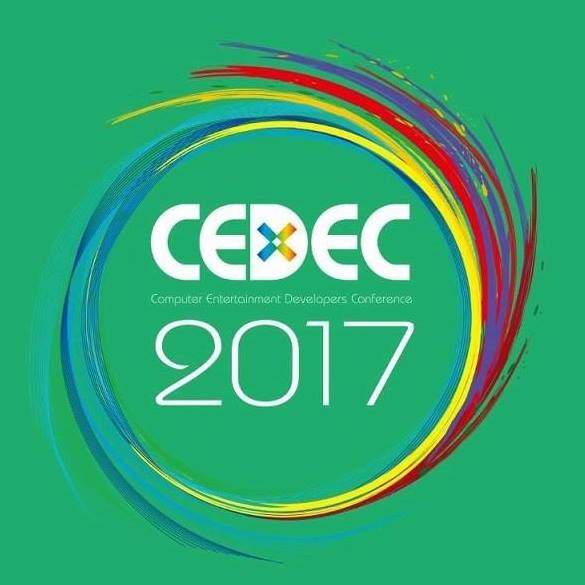
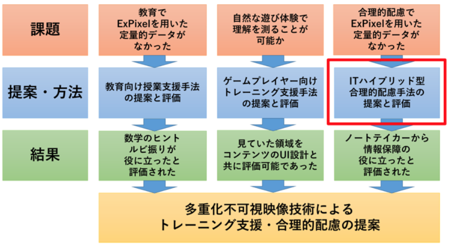
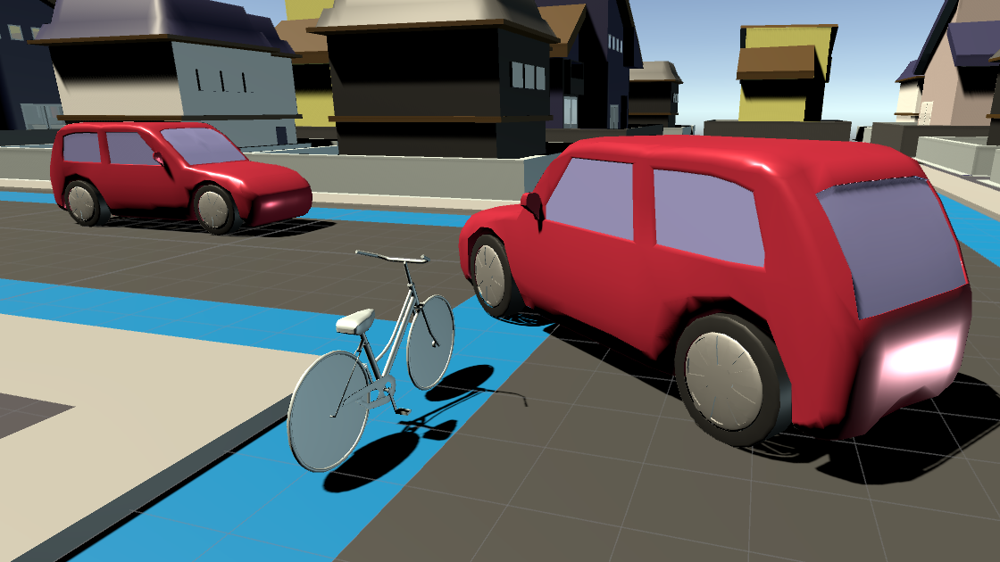

News
-
shirai wrote a new post, 卒業生の著書紹介「Unityによるモバイルゲーム開発 ―作りながら学ぶ2D/3Dゲームプログラミング入門」, on the site Shirai Lab 1年 11か月前
白井研最後の修士 鈴木久貴さんが初の著作(しかも翻訳)が予約開始とのこと。
研究室で学んだ作文メソッドが生きてるのありがたいですね…。
原著＆他の翻訳者の皆さんもありがとうございます。創る人を創る活動の第2世代ですね。
おめでとう！
「Unityによるモバイルゲーム開発 ―作りながら学ぶ2D/3Dゲームプログラミング入門」オライリージャパン 2018/8/24発売
-
shirai wrote a new post, 主宰退職および研究室バーチャル化のお知らせ, on the site Shirai Lab 2年前
白井研究室を主宰しておりました、私儀、白井暁彦は2018年5月末日にて幾徳学園 神奈川工科大学を退職し、2018年6月1日より、グリー株式会社に入社いたしました。
新所属および役職は「VR Studio Lab[…]

-
Rex HSIEH wrote a new post, Laval Virtual ReVolution 2018"MasQueRade"の発表, on the site Rex's Japan Adventure 2年 1か月前
私は今月の1日から、10日まで、欧州の最大バーチャルリアリティー学会：Laval Virtual ReVolution 2018に投稿したプロジェクトMasQueRadeを発表しに、VR技術発祥の地フランスへ行きました。学会はフランスの首都パリか […]

-
admin wrote a new post, TEPIA常設展示終了会および研究室OB会を開催します, on the site Shirai Lab 2年 4か月前
主に白井研究室OBの皆様。
幹事のRex HSIEH＠白井研究室の博士学生です。TEPIAにおける「Manga Generator」および「ExPixel」の常設展示が終了します。
2014年4月22日の展示開始より4年近くになるTEP[…]
-
Rex HSIEH wrote a new post, PythonのPIL(Python Imaging Library)で画像を加工します, on the site Rex's Japan Adventure 2年 4か月前
読者様、明けましておめでとうございます。久しぶりです。今回のブログは最近学んでいるPythonの進捗を記録します。現在私はPythonや他のプログラムで画像の認識や色々な変更をしたいです。
Pythonはオランダ出身のGuido Van Rossumで開発していて、1991年大衆に提供している、汎用なプログラムです。PIL(Python Imaging Library)はPythonに追加して、画像を自由自在に加工した […]

-
admin wrote a new post, 白井研究室の研究が同人誌になりました #技術書典, on the site Shirai Lab 2年 7か月前
このたび白井研究室の研究が特集された“薄い本”が出版されることになりましたのでおしらせします。
【新刊告知】
10/22(日)開催の技術書典３に作家の いちのみやゆき氏 が白井研究室の特集で新刊を発表するそうです。新刊：「Gijutsu-san-saku 2017 Autamn」
仕様：B5判30ページフルカラー
頒布価格：600円
技術書典についての詳細:いちのみやゆき氏はこちらのツイー[…]

-
Rex HSIEH wrote a new post, 第22回日本バーチャルリアリティ学会大会徳島VRSJ展示, on the site Rex's Japan Adventure 2年 8か月前
先週の火曜日(9月26日)に白井研究室の4年生と私は第22回日本バーチャルリアリティ学会大会で論文を発表するために、四国の徳島へ向かいました。私達は新横浜駅で合流して、新幹線を新神戸駅まで乗って、徳島駅へバスで向かいました。遠征チームのメンバーは6人です：私と4年生の望月宥冶、浅野隆弥、渡邉翔、山口聖也、そして武田竜平。今回は私は初めて日本の関西地域へ行くので、楽しみでしたし、緊張しました。
今回私が展示したプロジェク […]

-
shirai wrote a new post, インタラクティブ・サイネージ 「The Coming Future ～来たるべき未来」完成, on the site Shirai Lab 2年 8か月前
株式会社 富士通アドバン[…]
-
admin wrote a new post, 2017年秋の展示・発表ラッシュについてお知らせ, on the site Shirai Lab 2年 8か月前
秋です！発表シーズンです！
東京ゲームショー(幕張メッセ)、日本VR学会大会(徳島)＆DCEXPO2017(日本科学未来館)での発表予定について、まとめてお伝えいたします。東京ゲームショー2017
2017年9月21日〜24日 幕張メッセ 国際展示場9-11 CEDECブースにて「Real Baby – Real Family」を展示します。会場全体図
昨年と同じくインディゲームコーナーの奥です、図中右。[…] -
shirai wrote a new post, ゲーム開発者会議 CEDEC2017 にて2件の発表を行います, on the site Shirai Lab 2年 9か月前
2017年8月30日から9月1日までパシフィコ横浜にて開催されるゲーム開発者会議「CEDEC2017」にて展示＆口頭発表を行います．
【追記】発表スライドを追加いたしました。
口頭発表は2日目(8/31)15:20～15:45「次世代VR/ARエンタテイメントのための多重化映像生成ミドルウェア」
【セッションの内容】
本発表「次世代VR/ARエンタテイメントのための多重化映像生成ミドルウェア」では、既存の3D立体視技[…]  -
望月 宥冶 wrote a new post, 世界最高峰のCGの学会「SIGGRAPH」に行ってきました!, on the site 望月宥冶の研究日誌 2年 9か月前
久しぶりの更新です。
7/26~8/4までアメリカに行ってきたので、その体験記を書いていきます。7/30~8/3にアメリカのロサンゼルスで行われたCGの学会「SIGGRAPH 2017」に、「Real Baby – Real Family」を展示してきました。
Laval Virtual 2017に引き続き、SIGGRAPH 2017も招待展示となっており、Babyチームも全員参加です。私[…]
-
shirai wrote a new post, PlayCanvasによるWebゲーム開発ワークショップを開発しています, on the site Shirai Lab 2年 9か月前
WebGLによるゲームエンジン「PlayCanvas」を使ったワークショップを開発しています。
2017年8月20日の神奈川工科大学オープンキャンパスでは高校生向けに「ゲームエンジンを使ったWebゲーム開発とVRシステムの研究」というタイトルで「英語と物理でWebゲーム開発！」というワークショップを実施しています．
資料公開
情報メディア学科3年次の「ゲームプログラミング」にて学生が制作した作品を紹介します[…]
-
shirai wrote a new post, VR技術を使った子育て就業改善に向けた調査「テレ育児スタンス」結果データ公開, on the site Shirai Lab 2年 10か月前
先般実施いたしました、働き方改革に関するアンケートの結果を公開いたします。
アンケートの結果（一般・立教）
アンケートの結果（SSL）
以下，「働き方改革のためのVR技術(第1報) 子育て就業環境改善にむけた調査『テレ育児スタンス』」として第22回日本バーチャルリアリティ学会大会（2017年9月27日）にて発表予定です。
働き方改革のためのVR技術(第1報)子育て就業環境改善にむけた調査「テレ育児スタンス」[…]
-
Rex HSIEH wrote a new post, SIGGRAPH 2017 Overview, on the site Rex's Japan Adventure 2年 10か月前
7月26日から、8月6日まで、白井研究室のBabyチームは最新の”Real Baby – Real Family”をSIGGRAPHで展示するために、再び一回アメリカのロセンゼルスへ遠征に向 […]

-
shirai wrote a new post, SIGGRAPH2017 Emerging Technologiesで「Real Baby」の発表を行いました, on the site Shirai Lab 2年 10か月前
2017年7月30日～8月3日にかけて，アメリカ・ロサンゼルスで開催されたACM SIGGRAPH2017 Emerging Technologiesで「Real Baby」の発表を行いました．
神奈川工科大学 3年生による “VR赤ちゃん”「Real Baby – Real Family」が国際賞を連続受賞
こちらの記事でも紹介させていただきましたが，フランスLaval Virtual 20[…]

-
shirai wrote a new post, 平成28年度「多重化による合理的配慮対応・教育用ディスプレイシステムの開発」, on the site 神奈川工科大学 重点研究 2年 10か月前
PDF VERSION
[ダウンロードが見つかりません]平成28年度重点配分経費（研究）成果報告書
多重化による合理的配慮対応・教育用ディスプレイシステムの開発
配分研究費 (700千円) 1ヶ年研究者名：所属学科 情報メディア学科 氏名：白井暁彦
1. 研究の目的
本研究「多重化による合理的配慮対応・教育用ディスプレイシステムの開発」は．多重化ディスプレイを教育・[…]  -
大西 涼 wrote a new post, 8本目:行くぜ！VR ZONE in新宿 #VRZONE, on the site 白井研セミナー 2年 10か月前
どーも皆さんこんにちは‼ 毎日暑いですね．熱中症には気をつけてください．
7月15日に「VR ZONE SHINJUKU」に行ってきます．そこで,「VR ZONESHIN JUKU」について事前に，どんなものか，また自分が気になっているものを紹介したいと思います．
1.「VR ZONE SHINJUKU」について
「VR ZONE SHINJUKU」はJR新宿駅から徒歩7分の所[…]
-
大西 涼 wrote a new post, 10本目:道は続いてく(ブログまとめ), on the site 白井研セミナー 2年 10か月前
どーも皆さんこんにちは，大西です．
今回はセミナーブログのまとめをしていきたいと思います．
セミナーを履修する前の自分
セミナーを履修する前の自分は，進路に関して，余り積極的ではなく消極的であったかなと感じています．ただ毎日学校にきて授業を受けるような感じでした．
白井セミナーを選んだ理由としては，最初はシアトル研修から始まり，観光で訪れたリビングコンピュータミュージアムでＶＲを体験してただ漠然とVRが面白そうや，やっ[…]

-
武藏島 雄理 wrote a new post, 8番：最終回、締めていきましょう_武藏島雄理, on the site 白井研セミナー 2年 10か月前
こんにちは。4月くらいまで研究室に入る前に3回くらい深呼吸していた武藏島です。
2017年前期セミナーも最終回となります。
このセミナーを受講する前、後期末から春休みにかけて自転車を使用したVRコンテンツを企画していました。
開発自体は現在も続いているのですが、この企画自体は提出する前日に自転車で危ない目にあった勢いから生まれたものでした。
事前リサーチもそこそこに感情のままA4用紙に書き連ねて見切り発車しました[…] 
-
近藤 優生 wrote a new post, セミナーまとめ。3年前期を経て, on the site 白井研セミナー 2年 10か月前
こんにちは。
セミナー選択時期にたまたまPSVRを体験してVRに興味を持ったので白井セミナーを選んだ近藤です。
いよいよセミナー最終回という事で、今までのブログを振り返りつつ、この3年前期を振り返りたいと思います。
タイトルにリンク貼ってますので詳しくはそちらまで。
・僕について知りたい…知りたくない？
初回という事で自己紹介をしました。エゴサして自分が出てこないのなんの。そもそも近藤って何人いるの？！ってい[…]

- もっと読み込む